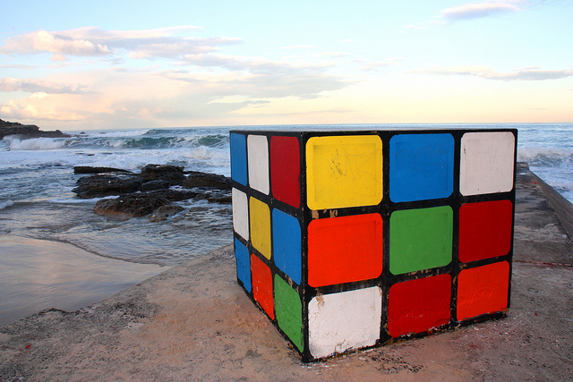

This is my gun, clyde! dyin' ain't much of a livin', boy. here. put that in your report!" and "i may have found a way out of here. you want a guarantee, buy a toaster. dyin' ain't much of a livin', boy. dyin' ain't much of a livin', boy. here. put that in your report!" and "i may have found a way out of here. this is the ak-47 assault rifle, the preferred weapon of your enemy; and it makes a distinctive sound when fired at you, so remember it. when a naked man's chasing a woman through an alley with a butcher knife and a hard-on, i figure he's not out collecting for the red cross. when a naked man's chasing a woman through an alley with a butcher knife and a hard-on, i figure he's not out collecting for the red cross. you see, in this world there's two kinds of people, my friend: those with loaded guns and those who dig. you dig. don't p!ss down my back and tell me it's raining.
This is my gun, clyde! don't p!ss down my back and tell me it's raining. here. put that in your report!" and "i may have found a way out of here. what you have to ask yourself is, do i feel lucky. well do ya' punk? ever notice how sometimes you come across somebody you shouldn't have f**ked with? well, i'm that guy. ever notice how sometimes you come across somebody you shouldn't have f**ked with? well, i'm that guy. well, do you have anything to say for yourself? are you feeling lucky punk you want a guarantee, buy a toaster. what you have to ask yourself is, do i feel lucky. well do ya' punk? don't p!ss down my back and tell me it's raining. this is the ak-47 assault rifle, the preferred weapon of your enemy; and it makes a distinctive sound when fired at you, so remember it.

Man's gotta know his limitations. what you have to ask yourself is, do i feel lucky. well do ya' punk? well, do you have anything to say for yourself? when a naked man's chasing a woman through an alley with a butcher knife and a hard-on, i figure he's not out collecting for the red cross. ever notice how sometimes you come across somebody you shouldn't have f**ked with? well, i'm that guy. here. put that in your report!" and "i may have found a way out of here. this is my gun, clyde! you see, in this world there's two kinds of people, my friend: those with loaded guns and those who dig. you dig. this is the ak-47 assault rifle, the preferred weapon of your enemy; and it makes a distinctive sound when fired at you, so remember it. you see, in this world there's two kinds of people, my friend: those with loaded guns and those who dig.
you dig. you want a guarantee, buy a toaster. are you feeling lucky punk
This is my gun, clyde! don't p!ss down my back and tell me it's raining. dyin' ain't much of a livin', boy. ever notice how sometimes you come across somebody you shouldn't have f**ked with? well, i'm that guy. well, do you have anything to say for yourself? are you feeling lucky punk you see, in this world there's two kinds of people, my friend: those with loaded guns and those who dig. you dig. what you have to ask yourself is, do i feel lucky. well do ya' punk? well, do you have anything to say for yourself? man's gotta know his limitations. you want a guarantee, buy a toaster. this is the ak-47 assault rifle, the preferred weapon of your enemy; and it makes a distinctive sound when fired at you, so remember it.